Microsoft Azure
Microsoft Azure
Project DescriptionDescripción del Proyecto
This project was created to learn how to work with Azure's AI Image Analysis service. To do so, we use the Computer Vision resource and install its latest SDK,
Azure.AI.Vision.ImageAnalysis, in Visual Studio. This SDK lets us build a console application that analyzes images with features such as caption generation, object tagging and text extraction,
exploring the different AI services Azure offers.
Este proyecto fue creado con el objetivo de aprender a trabajar con el servicio de Image Analysis de Inteligencia Artificial de Azure. Para ello, utilizaremos el recurso de Computer Vision e instalaremos su SDK más reciente,
Azure.AI.Vision.ImageAnalysis, en Visual Studio. Este SDK nos permitirá crear una aplicación de consola para analizar imágenes mediante funcionalidades como generación de descripciones, etiquetado de objetos y extracción de texto,
explorando así los distintos servicios de inteligencia artificial que ofrece Azure.
Project LinksEnlaces del Proyecto
☁️ Creating the Computer Vision resourceCreación del recurso Computer Vision
We go to the Azure portal and create the resource: Computer Vision.
Debemos ir al portal de Azure y crear el recurso: Computer Vision.
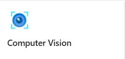
Once the resource is created, we review its details and save the connection credentials, which we will need later in the project.
Una vez creado el recurso, debemos revisar su información y guardar las credenciales de conexión, que necesitaremos más adelante en el proyecto.
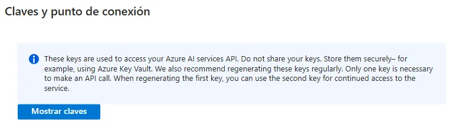
We go to the option that opens Vision Studio from the resource.
Vamos a la opción que nos permite acceder a Vision Studio desde el recurso.
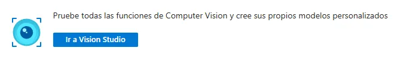
Inside Vision Studio, we check that it is linked to our Azure resource, which we can confirm from the gear icon:
Dentro de Vision Studio, validamos que esté ligado a nuestro recurso de Azure, lo cual podemos confirmar desde el ícono de engranaje:

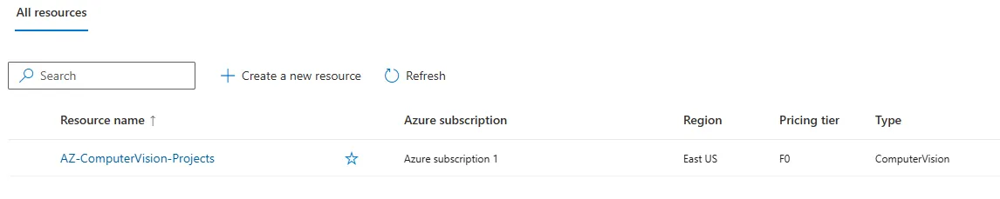
Once the resource is linked, we can use all the services Vision offers.
Una vez enlazado el recurso, podremos utilizar todos los servicios que Vision nos ofrece.
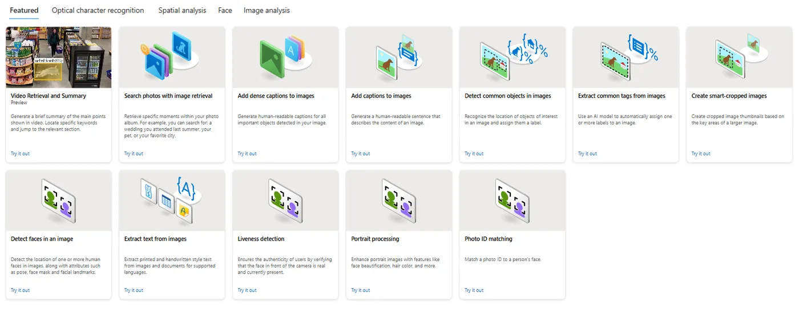
🤖 Installing the Azure ImageAnalysis SDKInstalación del SDK Azure ImageAnalysis
For this project a .NET 8.0 console application was created. Then we installed the Azure.AI.Vision.ImageAnalysis SDK from NuGet.
Para este proyecto se creó una aplicación de consola en .NET 8.0. Posteriormente, instalamos el SDK Azure.AI.Vision.ImageAnalysis desde NuGet.
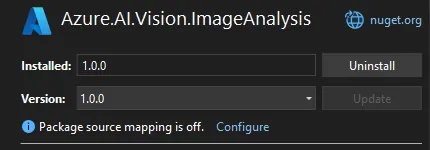
We based it on the example in the official Microsoft documentation: Nos basamos en el ejemplo de la documentación oficial de Microsoft: 🧠 View official Microsoft documentationVer documentación oficial de Microsoft
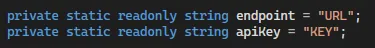
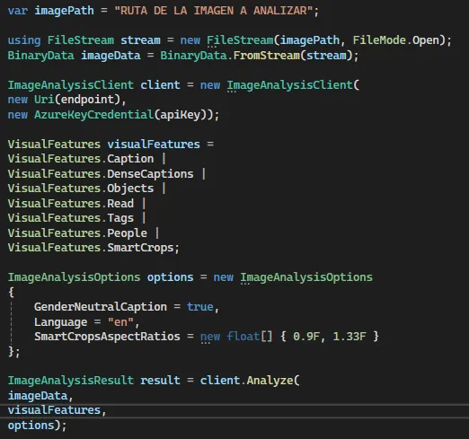
To test the services we use this sample image, which lets us see the generated results.
Para probar los servicios utilizaremos esta imagen de prueba, la cual nos permitirá observar los resultados generados.
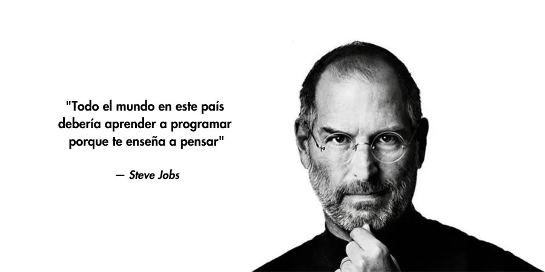
🧬 Image captionDescripción de la imagen
The Caption service is used to get a short description of the image and the confidence score of that description.
Se utilizará el servicio Caption para obtener una breve descripción de la imagen y el porcentaje de confianza de dicha descripción.
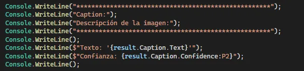
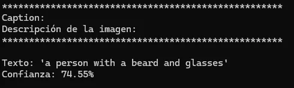
🧬 Detailed image captionsDescripción detallada de la imagen
The DenseCaptions service is used to generate several detailed descriptions of the image, including their confidence score and bounding box.
Se utilizará el servicio DenseCaptions para generar varias descripciones detalladas de la imagen, indicando su porcentaje de confianza y su caja delimitadora.
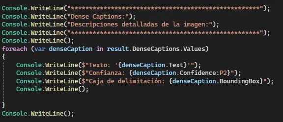
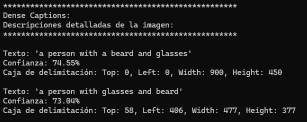
🧬 Object and tag detectionDetección de objetos y etiquetas
The Objects service is used to detect objects and tags in the image, including their bounding boxes.
Se utilizará el servicio Objects para la detección de objetos y etiquetas en la imagen, incluyendo sus respectivas cajas delimitadoras.
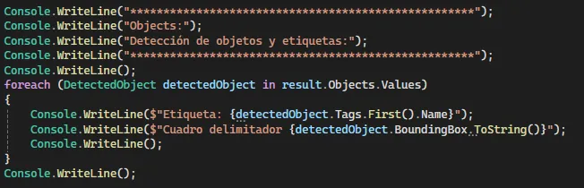
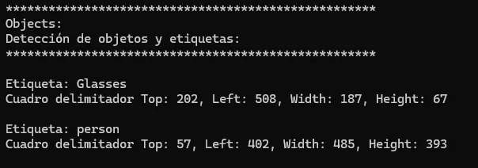
🧬 Reading text in images (OCR)Lectura de texto en imágenes (OCR)
The Read (OCR) service is used to extract text from images.
Se utilizará el servicio Read (OCR) para extraer texto de imágenes.
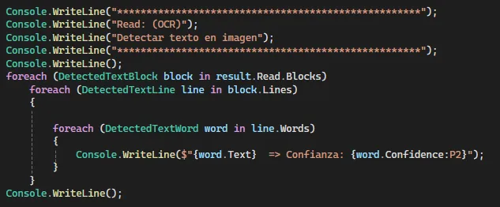
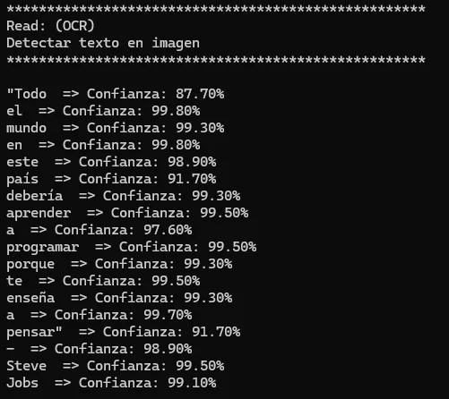
🧬 TagsEtiquetas
The Tags service is used to get the tags found in the image and their confidence score.
Se utilizará el servicio Tags para obtener las etiquetas encontradas en la imagen y su porcentaje de confianza.
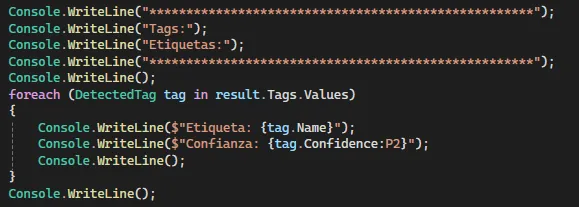
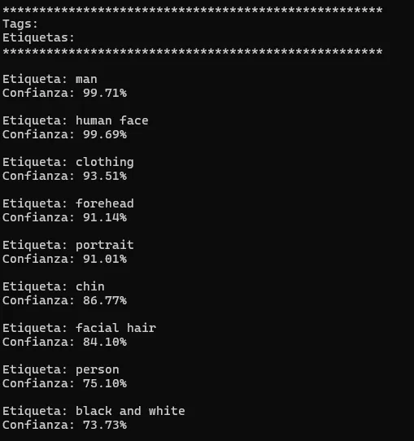
🧬 People detectionDetección de personas
The People service is used to detect people in the image, showing their bounding boxes and confidence score.
Se utilizará el servicio People para detectar personas en la imagen, mostrando sus cuadros delimitadores y el porcentaje de confianza.
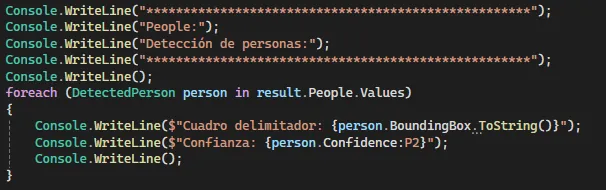
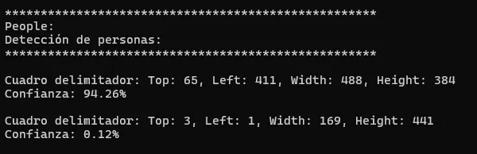